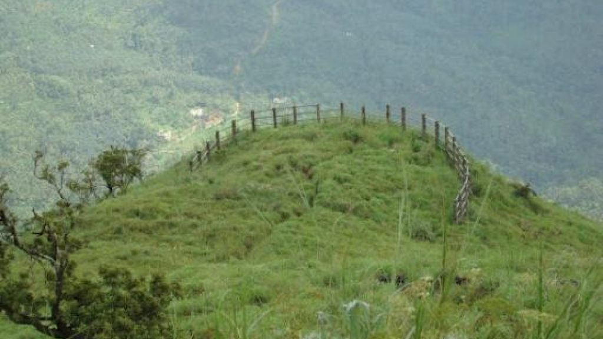
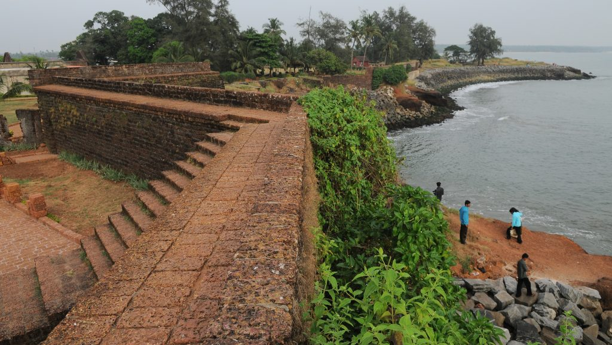
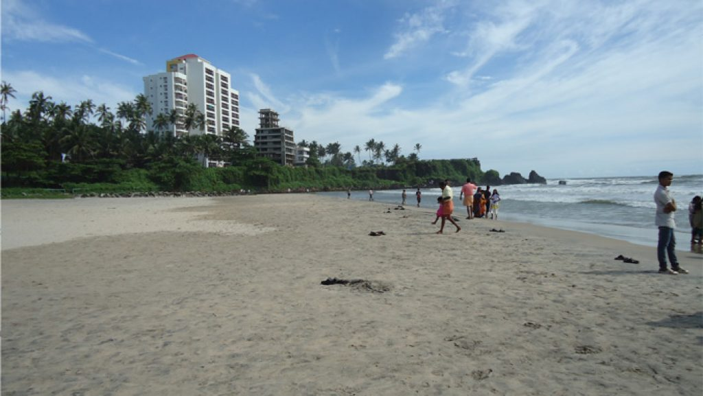

Kannur
Pythalmala, also called Vaithalmala, is a hill station situated in the Kannur region of Kerala. Snuggled in the Western Ghats, the trek takes you through dense forests and opens up to a wide expanse that goes to the Pythalmala peak.
Built by the first Portuguese Viceroy in India, Don Francesco de Almeida (1505), St. Angelo’s Fort is among the most historic sites in Kannur. This massive triangular laterite structure is flanked by gigantic bastions that make for an imposing sight. It changed hands between the Dutch and eventually the British, who would remodel and reequip it into their primary military stronghold in Malabar.
The Payyambalam Beach is an impeccably maintained destination in Kannur. This secluded location is known for providing one with the opportunity to simply relax or enjoy a family picnic in absolute tranquillity. Surfing and swimming options are also available for those who seek a little adventure. Being close to Kannur town has made it a favourite haunt for tourists and locals alike.
